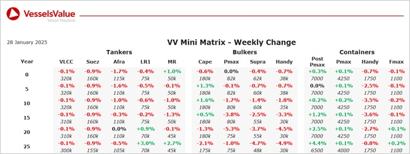

inWeekly Vessel Valuations Report28/01/2025

Bulkers:Bulker values remain stable this week
Capesize BC Salt Lake City (171,800 DWT, Aug 2005, Daewoo) sold to unknown Chinese buyers for 16.2 mil, VV Value USD 17.15 mil
Panamax BC Capt Stefanos (74,100 DWT, May 2002, Namura) sold to unknown Chinese buyers for 6.8 mil, VV Value USD 6.7 mil
Supramax BC Protector St Raphael (56,900 DWT, Jul 2010, Xiamen Shipbuilding Ind) sold to Holger Navigation for 11 mil, VV Value USD 11.2 mil
Handy BC Woodgate (28,200 DWT, May 2011, I-S) sold to Minh Phu for USD 10.5 mil, VV Value USD 10.68 mil
Tankers:Tanker values remained mostly stable last despite recent earnings fluctuation while newbuild and resale MR values increased from last week
Suezmax Nordic Apollo (160,000 DWT, Jul 2003, Samsung) sold to unknown UK buyers for USD 22.5 mil, VV Value USD 25.37 mil
MR2 (Chemical/Product) PS Augusta (51,000 DWT, Mar 2011, STX Offshore) sold to unknown Middle Eastern buyers for USD 25.5 mil, VV Value USD 26.39 mil
Containers:Recent newbuild deals for Handy containers have brought down the -3YOs, as well as the sales of 2 Sub Panamaxes bringing down the midage vessels of that size.
Sub Panamaxes Independent Spirit and Chiquita Farmer (2,546 TEU, Jiangsu Yangzijiang 2007) sold to MSC en bloc for USD 40 mil, VV Value USD 44.9 mil.
Handy Cont Jan (1,577 TEU, Imabari, 2010) sold to the Far East for USD 17.5 mil, VV Value USD 20.2 mil.
